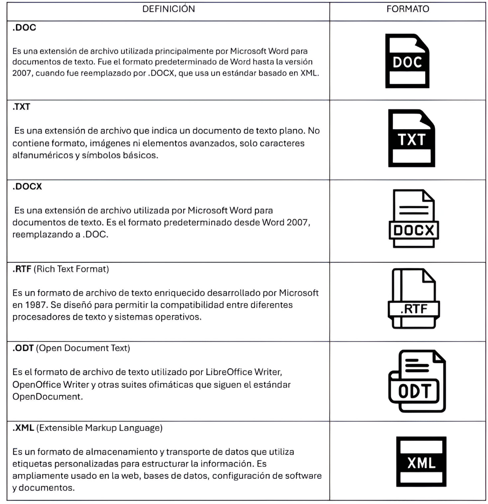

Formatos
tipos de video, audio, texto etc.
La Multimedia en la Web
La multimedia en la web se refiere a la integración de contenido multimedia (imágenes, audio, video, animaciones e interactividad) dentro de sitios web y aplicaciones en línea. Gracias a tecnologías como HTML5, CSS3 y JavaScript, la web ofrece experiencias dinámicas e inmersivas.
Tipos de Video
Un formato de video es la forma en que se organiza y codifica un archivo de video para que pueda ser almacenado, reproducido o transmitido. Este formato está compuesto por dos elementos principales: el contenedor y el códec. El contenedor es la parte del archivo que agrupa todos los componentes del video, como la imagen, el sonido, los subtítulos y otros datos relacionados. Los contenedores más conocidos son MP4, AVI, MKV, MOV y WEBM. Cada uno de estos tiene sus propias características en cuanto a compatibilidad, calidad y peso del archivo.
Por otro lado, el códec es el sistema que comprime y descomprime los datos del video y del audio dentro del archivo. Esta compresión permite que los archivos ocupen menos espacio sin perder demasiada calidad. Algunos de los códecs más comunes son H.264, H.265, VP9 y AV1. El formato final de un video depende de la combinación del contenedor y el códec utilizado. Por ejemplo, un archivo con extensión .mp4 generalmente usa el códec H.264.
La elección del formato de video es importante porque influye directamente en la calidad visual y sonora del archivo, el tamaño del archivo, su compatibilidad con diferentes dispositivos y programas, y su rendimiento en plataformas de reproducción como páginas web o aplicaciones móviles. Por eso, los formatos como MP4 son muy populares, ya que ofrecen un buen equilibrio entre calidad y tamaño, además de ser ampliamente compatibles.
En resumen, el formato de video es fundamental para asegurar que el contenido audiovisual pueda reproducirse correctamente, con buena calidad y en diferentes entornos tecnológicos.

MP4
El formato más común y utilizado para compartir contenido en línea.
MPEG IV
Utilizado en dispositivos con menor capacidad de procesamiento como smartphones.

AVI
Compatible con todas las plataformas y dispositivos de video convencionales.

MOV
Utilizado principalmente en dispositivos de Apple.

MKV
Formato libre y de código abierto que permite incluir audio, video y subtítulos.

FLV, F4V y SWF
Formatos usados por Adobe Flash Player, adecuados para integración web.
Formato de audio
Un formato de audio es la estructura digital en la que se guarda un archivo de sonido. Define cómo se codifica y almacena la información del audio para que pueda ser reproducida por distintos dispositivos o programas. Al igual que con el video, los formatos de audio combinan un contenedor con un códec, que es el encargado de comprimir y descomprimir los datos del sonido. Existen formatos comprimidos y sin comprimir, dependiendo de la calidad deseada y del tamaño del archivo.
Los formatos de audio más utilizados incluyen opciones como MP3, WAV, AAC, FLAC y OGG. Cada uno tiene características particulares. Por ejemplo, el formato MP3 es uno de los más populares por su alta compresión y compatibilidad, aunque pierde algo de calidad. WAV, en cambio, ofrece sonido sin comprimir, lo que garantiza una calidad muy alta, pero con archivos mucho más grandes. AAC es similar a MP3 pero ofrece mejor calidad a igual tasa de bits y es común en servicios de streaming como YouTube. FLAC es un formato comprimido sin pérdida de calidad, ideal para audiófilos que desean conservar el sonido original. OGG es un formato libre y abierto, también usado en juegos o aplicaciones que buscan buena calidad sin pagar licencias.
El formato de audio elegido afecta directamente la calidad del sonido, el espacio de almacenamiento necesario y la compatibilidad con reproductores o plataformas digitales. Por esta razón, es importante seleccionar el formato más adecuado según el uso previsto, ya sea para música, grabaciones, distribución en línea, edición profesional o almacenamiento a largo plazo.

Formato de Texto
Un formato de texto es la manera en que se guarda y estructura la información escrita en un archivo digital. Existen distintos tipos de formatos de texto, y cada uno tiene características específicas que determinan cómo se representa el contenido, si se incluye solo texto plano o también información sobre estilos, fuentes, colores, imágenes, tablas y otros elementos de formato.
El formato más simple es el texto plano, conocido como TXT, que solo contiene caracteres sin ningún tipo de formato adicional, como negritas, cursivas o tamaños de letra. Es utilizado principalmente para notas rápidas o archivos que necesitan ser compatibles con cualquier sistema operativo. En cambio, los formatos de texto enriquecido, como RTF (Rich Text Format), permiten incluir estilos básicos como subrayado, colores y diferentes fuentes, manteniendo una estructura sencilla y compatible con muchos programas.
Otros formatos de texto más complejos, como DOC o DOCX de Microsoft Word, permiten una gran variedad de opciones de formato, como insertar imágenes, gráficos, tablas, encabezados y pies de página. Estos archivos están diseñados para tareas de edición más avanzadas y requieren programas específicos para abrirse correctamente. También existen formatos como PDF, que conservan el diseño exacto del documento sin importar en qué dispositivo se abra, lo que los hace ideales para la distribución de contenido finalizado.
Además, hay formatos de texto utilizados en programación o desarrollo web, como HTML, XML, JSON o Markdown, que aunque contienen texto, también incluyen etiquetas o estructuras especiales que permiten organizar datos, definir contenido web o facilitar el intercambio de información entre sistemas.
En resumen, el formato de texto determina cómo se almacena, visualiza y edita el contenido escrito, y su elección depende del propósito del documento, del nivel de formato que se necesite y del programa con el que se trabajará.
